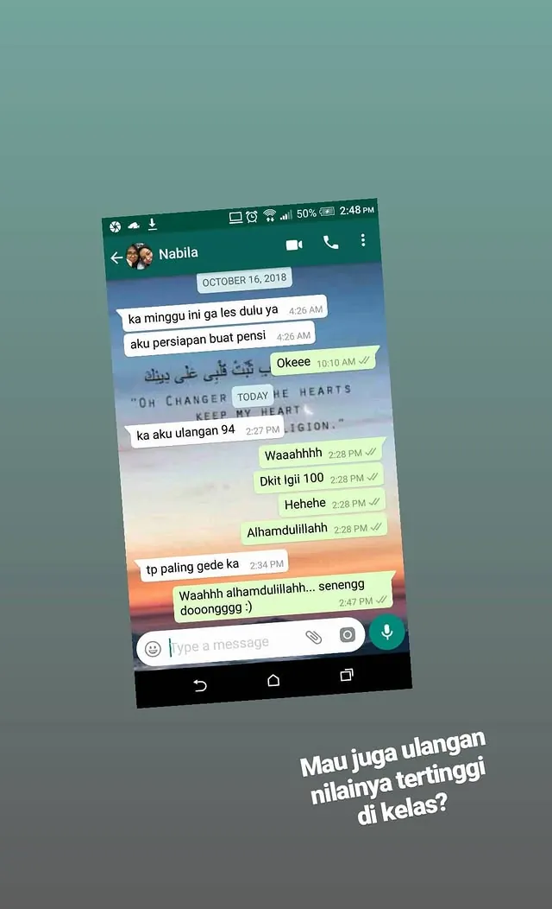
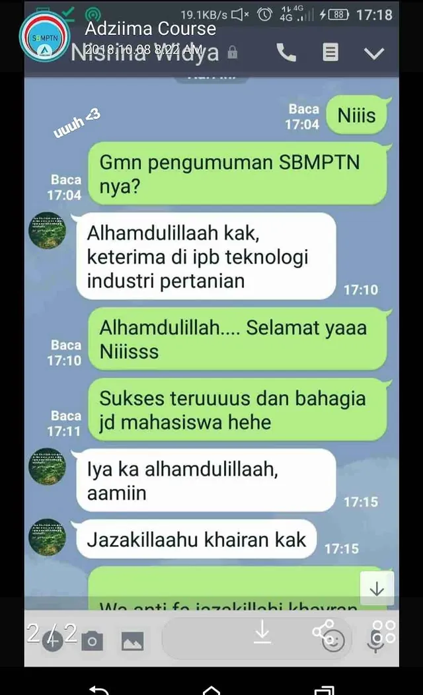
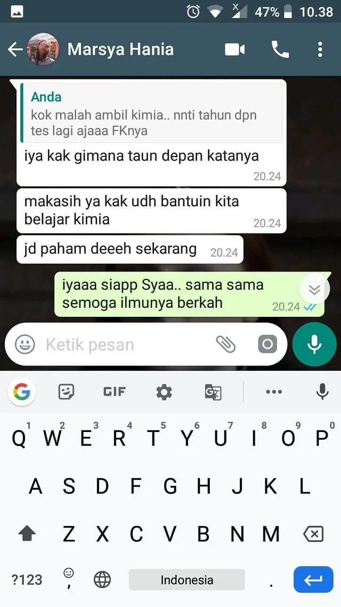

1
Jelas
Konsep dijelaskan dengan bahasa yang dapat dipahami siswa.
Lebih dari 10 tahun mendampingi siswa membentuk pendekatan Inersia: personal, sabar, terarah, dan berpijak pada perkembangan nyata.

Miss Nuning membangun Inersia Education untuk menghadirkan pendampingan belajar yang lebih dekat, terukur, dan bertanggung jawab kepada siswa serta orang tua.
Konsep dijelaskan dengan bahasa yang dapat dipahami siswa.
Koreksi diarahkan pada kesalahan dan kebutuhan siswa.
Perkembangan ditinjau melalui latihan dan evaluasi.
Komunikasi dengan siswa dan orang tua dijaga secara bertanggung jawab.
Klik setiap gambar untuk membaca dokumentasi percakapan dalam ukuran penuh.
 Pendampingan yang sabar
Pendampingan yang sabar

Nilai ulangan 94
Diterima di IPB Pilihan pertama Psikologi Unpad
Pilihan pertama Psikologi Unpad
 Fleksibel dan mudah dipahami
Fleksibel dan mudah dipahami
 Hasil belajar meningkat
Hasil belajar meningkat
 Diterima Kedokteran Gigi UB
Diterima Kedokteran Gigi UB
 Kemajuan mulai terlihat
Kemajuan mulai terlihat

Kimia menjadi lebih dipahamiSebagian dokumentasi berasal dari perjalanan mengajar sebelum Inersia Education berdiri. Dokumentasi menunjukkan pengalaman pendampingan dan bukan jaminan hasil yang sama bagi setiap siswa.
Tim akan membantu memilih format pendampingan yang sesuai dengan kebutuhan dan target siswa.